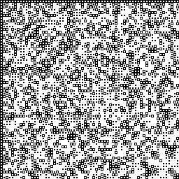

This page contains information about this website.
This website's palette consists of 4 shades of gray.
This website's icon is the PQ image given by painter 37, q-value 3, and length 16. The ratio of black pixels to white pixels in the icon is 17 to 15.
